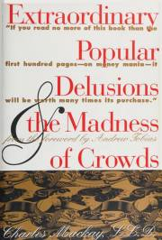

Extraordinary Popular Dllusions & the Madness of Crowds
Behavioral Finance · Economic History
|  | |
| archive.org | |
| 2022 | |
Charles MacKay's groundbreaking examination of a staggering variety of popular delusions, crazes and mass follies is presented here in full with no abridgements.
The text concentrates on a wide variety of phenomena which had occurred over the centuries prior to this book's publication in 1841. Mackay begins by examining various economic bubbles, such as the infamous Tulipomania - wherein Dutch tulips rocketed in value amid claims they could be substituted for actual currency - and various follies spread by word of mouth in urban areas.
As we progress further, the scope of the book broadens into several more exotic fields of mass self-deception. Mackay turns his attention to the witch hunts of the 17th and 18th centuries, the practice of alchemy, the phenomena of haunted houses, the vast and varied practices of fortune telling and the search for the philosopher's stone, to name but a handful of subjects. Informed by personal research, and exhaustive in detail, it is with an evocative conviction that the author excoriates mankind's numerous delusions.
Further examples of topics in this lengthy book include various claims concerning old relics and artefacts, often involving such items being said to possess religious significance. Mackay saves particular scorn for popular romanticism surrounding the lives of certain criminal scoundrels, whereby said wrongdoers are thought virtuous in popular society; he also notes the marked emergence of quack medicine concurrent with meaningful advances in medical science. The acceptance into society of these phenomena is considered but another facet of the human crowd's inherent madness, feeding into the central thesis of this book.
Charles Mackay was a journalist used to writing for a popular audience; as such, his book is highly readable and accessible even today. Despite his dogged research and dislike of various delusions, Mackay was not himself immune to participating in them himself; he was involved in the 1840s Railway Mania, and supplemented his interest with newspaper columns in which he assured readers that there was no danger of the railway market crashing.
Today, Extraordinary Popular Delusions and The Madness of Crowds is distinguished as an expansive, well-researched and somewhat eccentric work of social history.